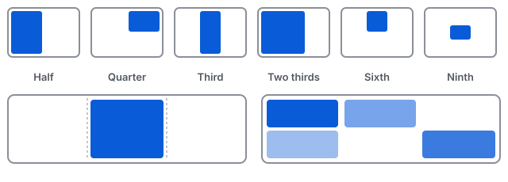

Windows that snap into place.
Snapr is a free menu bar app for macOS that tiles your windows with a shortcut or a drag to the screen edge. Windows-style snap, for your Mac.
Free and open source (MIT). Requires macOS 13 or later. Current builds are ad-hoc signed, not notarized; see install.
What Snapr does
Everything below is in the app's source today; no release with all of it has shipped yet. Defaults are listed in the README; all shortcuts can be rebound in Settings.
Snap layouts
Halves, quarters, thirds and two-thirds, plus fourths, sixths, eighths and ninths, center half, almost-maximize, maximize, center and restore. Repeating a half cycles 1/2, 2/3 and 1/3 width.
Keyboard shortcuts
Global shortcuts such as Ctrl+Opt+← for the left half. Rebind or clear any of them; conflicts are flagged. A Spectacle-compatible preset is included.
Drag to the edge
Drag a window to a side for a half, the top for maximize, or a corner for a quarter, with a preview of where it will land. Can be switched off.
Multiple displays
Send windows to the next or previous display, with options for display ordering and how sizes carry over.
Gaps and sizing
Optional gaps between windows and at screen edges, larger/smaller steps, move without resizing, and a hint when a window hits its minimum size.
Multi-window modes
Tile all windows or just the active app (rows, columns), cascade, and cycle through a stack of windows. Todo mode reserves a sidebar and tiles the rest beside it.
Custom layouts
Define your own zones with shortcuts for any size and position, and save and recall window arrangements.
Automation
Run actions from scripts or Shortcuts with snapr://execute-action?name=left-half, and ignore or unignore apps by bundle ID. Advanced options via defaults write.
Ignore apps and config
Turn shortcuts off while chosen apps are frontmost. Export and import your settings as JSON to move between Macs.
Move between Spaces Experimental
Off by default. It relies on private macOS APIs, may not work on every macOS version, and is never switched on by an imported config.

Install in three steps
Snapr is currently distributed as an ad-hoc signed DMG. It is not notarized and not on the App Store, so macOS asks for a little extra confirmation the first time.
Download the DMG
Get
Snapr-<version>.dmgfrom the Releases page and drag Snapr to Applications.Open past Gatekeeper
On macOS 13 and 14, right-click Snapr.app and choose Open. On macOS 15 Sequoia and later, try opening the app, then go to System Settings, Privacy & Security and click "Open Anyway". Or run
xattr -dr com.apple.quarantine /Applications/Snapr.app.Grant Accessibility
When prompted, allow Snapr in System Settings, Privacy & Security, Accessibility. Then use the menu bar icon, a shortcut or a drag.
Prefer Homebrew? A cask template exists in the repo, but a tap has not been published yet. Check the Releases page for status.
Private by design
Snapr is free, runs entirely on your Mac, and has no telemetry and no accounts. The only network use is an optional update check, which you can turn off in Settings. Development builds do not check at all. The source is public so you can verify this yourself.
FAQ
Why does Snapr need Accessibility permission?
macOS only lets an app move and resize other apps' windows through the Accessibility API. Snapr uses it for that and for detecting drags to screen edges. It reads window titles and positions locally (for example for saved layouts and the new-window action); it does not read window contents and sends nothing off your Mac.
Why does macOS warn me when I open it?
Current builds are ad-hoc signed and not notarized by Apple, so Gatekeeper blocks a normal double-click on first launch. On macOS 13 and 14, right-click Snapr.app and choose Open. On macOS 15 Sequoia and later that no longer works for unnotarized apps: try opening the app, then use System Settings, Privacy & Security, "Open Anyway". Or remove the quarantine flag with xattr -dr com.apple.quarantine /Applications/Snapr.app.
Which macOS versions are supported?
macOS 13 (Ventura) or later.
Is it really free?
Yes. Snapr is open source under the MIT license, with no paid tier, ads or accounts.
Can I turn off update checks?
Yes. Release builds can check for updates about daily; switch that off in Settings.